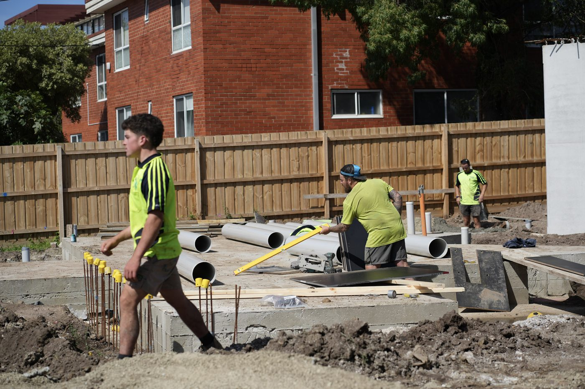

What we do
The underground stage, handled
We take the drainage and civil works off your plate so you can run the rest of the job. Domestic, unit-site and commercial drainage, aggie and subsoil drains, cut & seal and site works all sit with us, worked to your program and documented properly, so it lands clean and the trades behind us aren't held up.
- Domestic and unit-site drainage
- Commercial drainage
- Aggie (agricultural) drains
- Site and subsoil drainage
- Works to your program and documentation